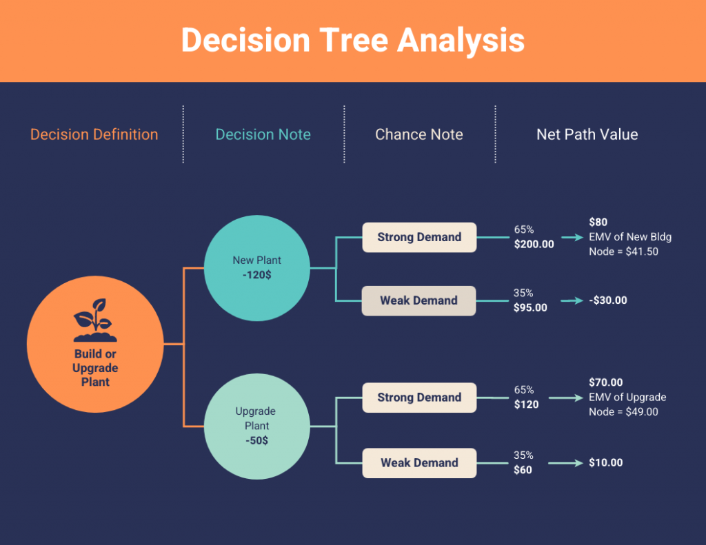

Decision Trees: A Powerful Data Mining Technique for Predictive Analysis

Introduction
Decision Trees are one of the most widely used and intuitive data mining techniques for classification and regression tasks. Their ability to visualize data and explain decisions in a simple structure makes them a popular choice for data scientists and businesses alike. In this blog, we’ll explore how decision trees work, their applications, and why they are such a powerful tool for predictive analysis.
What is a Decision Tree?
A Decision Tree is a flowchart-like structure where each internal node represents a "decision" based on the value of a feature, each branch represents an outcome of that decision, and each leaf node represents a class label (in classification) or a numeric value (in regression). The goal is to split the data in a way that best separates the target variable, making predictions more accurate.
Key Components of a Decision Tree
- Root Node: The starting point of the tree where the entire dataset is split based on the best feature.
- Decision Nodes: Nodes where the data is split based on certain attributes or features.
- Leaf Nodes: The final nodes that represent the output of the decision process, either a class label or a regression value.
- Branches: The edges connecting the nodes, representing the decision outcomes.
How Does a Decision Tree Work?
- Selecting the Best Feature: The root node and subsequent decision nodes are chosen by selecting the feature that best splits the data based on criteria like Information Gain, Gini Impurity, or Chi-Square tests.
- Splitting the Data: The data is divided into subsets based on the chosen feature’s values.
- Recursion: This process is repeated recursively for each subset, creating new decision nodes and branches, until the data cannot be split further or a stopping criterion is met.
- Pruning: After the tree is built, unnecessary nodes or branches may be removed (pruning) to prevent overfitting and improve generalization.
Example
Consider a dataset used to predict whether a person buys a particular product based on their age and income. The decision tree might first split the data based on income, then split further based on age, and finally predict whether or not the person buys the product based on the remaining data.
Key Metrics Used in Decision Trees
- Information Gain (Entropy): A measure of the reduction in uncertainty (entropy) after a split. Higher information gain indicates a better feature for splitting the data.
- Gini Impurity: A measure of how often a randomly chosen element would be incorrectly classified. The goal is to choose the feature that minimizes Gini Impurity.
- Chi-Square: A statistical test used to determine whether a feature significantly affects the outcome, helping to decide the best feature to split the data.
Types of Decision Trees
- Classification Trees: Used for categorical outcomes. The output is a class label (e.g., predicting if a customer will buy a product: Yes or No).
- Regression Trees: Used for continuous outcomes. The output is a numeric value (e.g., predicting the price of a house based on its features like size and location).
Advantages of Decision Trees
- Interpretability: Decision Trees are easy to understand and interpret. They visually represent the decision-making process, making it easier for non-experts to follow the logic behind the predictions.
- Handles Both Categorical and Numerical Data: Decision Trees can handle both types of data without needing complex preprocessing.
- No Feature Scaling Required: Unlike many other algorithms (like SVMs or k-NN), Decision Trees do not require normalization or scaling of the data.
- Non-Linear Relationships: Decision Trees can model complex, non-linear relationships between features and the target variable.
Applications of Decision Trees
- Customer Segmentation: Decision Trees are used by marketers to segment customers based on features like age, purchase behavior, or location. These segments can then be targeted with personalized marketing strategies.
- Healthcare Predictive Analysis: Healthcare professionals use Decision Trees to predict the likelihood of patients developing specific conditions, helping to inform treatment plans and preventive measures.
- Credit Scoring: Banks use Decision Trees to assess the creditworthiness of loan applicants by evaluating features like income, credit history, and employment status.
- Fraud Detection: In industries like banking and e-commerce, Decision Trees help detect fraudulent activities by classifying transactions as either normal or suspicious based on various factors like transaction amount, location, and time of transaction.
- Risk Assessment: Insurance companies use Decision Trees to assess the risk profile of clients and determine premium rates based on factors like health, occupation, and driving history.
Challenges of Decision Trees
- Overfitting: Decision Trees can easily overfit the training data, especially if the tree is too deep. This happens when the model captures noise and outliers in the data rather than general patterns.
- Instability: Small changes in the data can lead to a completely different tree being generated, making Decision Trees sensitive to fluctuations in the dataset.
- Bias Toward Dominant Classes: Decision Trees tend to be biased toward classes that appear more frequently in the dataset, leading to skewed predictions.
Conclusion
Decision Trees are a powerful tool in data mining, offering interpretable, flexible, and easy-to-implement solutions for both classification and regression tasks. Their widespread application in industries like retail, finance, healthcare, and risk management highlights their importance. By understanding their strengths and addressing challenges like overfitting, organizations can leverage Decision Trees to make better, data-driven decisions.